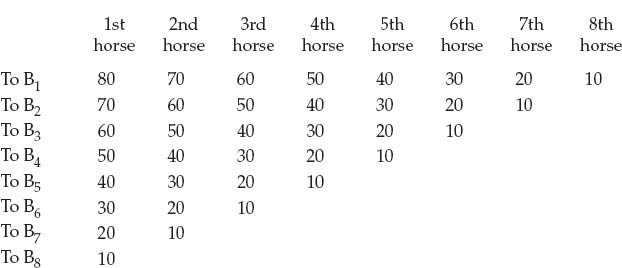

THE THEORY
OF PRICE
However much prices, or in other words, the quantities of goods actually exchanged, may impress themselves on our senses, and on this account form the usual object of scientific investigation, they are by no means the most fundamental feature of the economic phenomenon of exchange. This central feature lies rather in the better provision two persons can make for the satisfaction of their needs by means of trade. Economizing individuals strive to better their economic positions as much as possible. To this end they engage in economic activity in general. And to this end also, whenever it can be attained by means of trade, they exchange goods. Prices are only incidental manifestations of these activities, symptoms of an economic equilibrium between the economies of individuals.
If the locks between two still bodies of water at different levels are opened, the surface will become ruffled with waves that will gradually subside until the water is still once more. The waves are only symptoms of the operation of the forces we call gravity and friction. The prices of goods, which are symptoms of an economic equilibrium in the distribution of possessions between the economies of individuals, resemble these waves. The force that drives them to the surface is the ultimate and general cause of all economic activity, the endeavor of men to satisfy their needs as completely as possible, to better their economic positions. But since prices are the only phenomena of the process that are directly perceptible, since their magnitudes can be measured exactly, and since daily living brings them unceasingly before our eyes, it was easy to commit the error of regarding the magnitude of price as the essential feature of an exchange, and as a result of this mistake, to commit the further error of regarding the quantities of goods in an exchange as equivalents. The result was incalculable damage to our science since writers in the field of price theory lost themselves in attempts to solve the problem of discovering the causes of an alleged equality between two quantities of goods.1 Some found the cause in equal quantities of labor expended on the goods. Others found it in equal costs of production. And a dispute even arose as to whether the goods are given for each other because they are equivalents, or whether they are equivalents because they are exchanged. But such an equality of the values of two quantities of goods (an equality in the objective sense) nowhere has any real existence.
The error on which these theories were based becomes immediately apparent as soon as we free ourselves from the one-sidedness that previously prevailed in the observation of price phenomena. The only quantities of goods that can be called equivalents (in the objective sense of the term) are quantities which, at a given point in time, can be exchanged at will— that is, in such a way that if one of two quantities of goods is offered, the other can be acquired for it, and vice versa. But equivalents of this sort are nowhere present in human economic life. If goods were equivalents in this sense, there would be no reason, market conditions remaining unchanged, why every exchange should not be capable of reversal. Suppose A had exchanged his house for B’s farm or for a sum of 20,000 Thalers. If these goods had become equivalents in the objective sense of the term as a result of the transaction, or if they had already been equivalents before it took place, there is no reason why the two participants should not be willing to reverse the trade immediately. But experience tells us that in a case of this kind neither of the two would give his consent to such an arrangement.
The same observation can also be made under the most highly developed conditions of trade, and even with respect to the most saleable commodities. Let anyone buy grain on a grain exchange or securities on a stock exchange and try to sell them again before a change in market conditions occurs, or let him try to sell and buy separate units of the same commodity at the same time, and he will easily be convinced that the difference between supply prices and demand prices is no mere accident but a general feature of social economy.
Thus commodities that can be exchanged against each other in certain definite quantities (a sum of money and a quantity of some other economic good, for instance), that can be exchanged for each other at will by a sale or a purchase, in short, commodities that are equivalents in the objective sense of the term, do not exist—even on given markets and at a given point in time. And what is more important, deeper understanding of the causes that lead to the exchange of goods and to human trade in general teaches us that equivalents of this sort are utterly impossible in the very nature of the case and cannot exist in reality at all.
A correct theory of prices cannot, therefore, have the task of explaining an alleged “equality of value” between two quantities of goods when such an equality does not, in truth, exist anywhere. In this setting, the subjective character of value and the nature of exchange would be completely misunderstood. A correct theory of price must instead be directed to showing how economizing men, in their endeavor to satisfy their needs as fully as possible, are led to give goods (that is, definite quantities of goods) for other goods. In this investigation, I shall proceed in accordance with the methods followed generally in this work, beginning with the simplest phenomena and gradually passing on to the more complex phenomena of price formation.
1.
Price Formation in an Isolated Exchange
In the previous chapter, we saw that the possibility of an economic exchange of goods is dependent on an economizing individual having command of goods that have a smaller value to him than other goods at the command of another economizing individual who values the two goods in reverse fashion. The mere statement of this condition, however, strongly implies the existence of limits within which price formation must, in any given instance, take place.
By way of illustration, we will suppose that 100 units of A’s grain have the same value to him as 40 units of wine. It is clear from the beginning that A will, under no circumstances, be prepared to give more than 100 units of grain for 40 units of wine in an exchange, since if he were to do so, his needs would be less well provided for after the exchange than before. He will agree to an exchange only if it enables him to make better provision for his needs than would be possible without the exchange. He will be willing to exchange his grain for wine only if he has to give less than 100 units of grain for 40 units of wine. Thus whatever the price of 40 units of wine may eventually be in an exchange of A’s grain for the wine of some other economizing individual, this much is certain, that it cannot, owing to the economic position of A, reach 100 units of grain.
If A can find no other economizing individual to whom a smaller quantity than 100 units of grain has a greater importance than 40 units of wine, he will never be in a position to exchange his grain for wine. In this event, the foundations for an economic exchange of the two goods would not be present so far as A is concerned. But if A does find a second economizing individual, B, to whom only 80 units of grain, for example, have a value equal to 40 units of wine, the prerequisites for an economic exchange between A and B are certainly present (provided the two men recognize the situation and no barriers stand in the way of execution of the exchange), and at the same time a second limit is set to price formation. If it follows from the economic situation of A that the price of 40 units of wine must be below 100 units of grain (since he would otherwise derive no economic gain from the transaction), it follows from the economic situation of B that a greater quantity than 80 units of grain must be offered for his 40 units of wine. Hence, whatever the price that is finally established for 40 units of wine in an economic exchange between A and B, this much is certain, that it must be formed between the limits of 80 and 100 units of grain, above 80 and below 100 units.
It is easily seen that A could provide better for the satisfaction of his needs even if he should have to give 99 units of grain for the 40 units of wine, and that B would be acting economically on the other side if he were to accept as little as 81 units of grain in exchange for his 40 units of wine. But since there is an opportunity for both economizing individuals to exploit a much larger economic advantage, each of them will direct his efforts to turning as large a share as possible of the economic gain to himself. The result is the phenomenon which, in ordinary life, we call bargaining. Each of the two bargainers will attempt to acquire as large a portion as possible of the economic gain that can be derived from the exploitation of the exchange opportunity, and even if he were to try to obtain but a fair share of the gain, he will be inclined to demand higher prices the less he knows of the economic condition of the other bargainer and the less he knows the extreme limit to which the other is prepared to go.
What will be the numerical result of this price duel?
It is certain, as we saw, that the price of 40 units of wine will be higher than 80 units and lower than 100 units of grain. But it appears equally certain to me that the outcome of the exchange will prove sometimes more favorable to one and sometimes more favorable to the other of the two bargainers, depending upon their various individualities and upon their greater or smaller knowledge of business life and, in each case, of the situation of the other bargainer. In the formulation of general principles, however, there is no reason for assuming that one or the other of the two bargainers will have an overwhelming economic talent, or that other circumstances will operate more in the favor of one than the other. Under the assumption of economically equally capable individuals and equality of other circumstances, therefore, I venture to state, as a general rule, that the efforts of the two bargainers to obtain the maximum possible gain will be mutually paralyzing, and that the price will therefore be equally far from the two extremes between which it can be established.
In our case, the price for a quantity of wine of 40 units upon which the two bargainers will finally agree will lie within the limits of 80 and 100 units of grain, with the further restriction that it must be higher than 80 and lower than 100 units. As concerns its position between these limits, if the two bargainers are otherwise equally situated, it will be equal to 90 units of grain. But if this equality in their situations does not prevail, an exchange at another price between the two limits would not be economically impossible.
What has been said of price formation in this case holds in a similar fashion for every other. Wherever the foundations for an economic exchange of two goods between two economizing individuals exist, the nature of the relationship itself sets definite limits within which price formation must take place if the exchange is to have economic character at all. These limits are given by the different quantities of the goods that are equivalents for each bargainer (equivalents in a subjective sense). (In the example just considered, for instance, 100 units of grain are the equivalent of 40 units of wine for A, and 80 units of grain are the equivalent of the same quantity of wine for B.) Within these limits, the price tends to be determined at the average of the two equivalents (and hence, in our example, at 90 units of grain, the average of 80 and 100 units).
The quantities of goods that are given for each other in an economic exchange are therefore precisely determined by the economic situation obtaining in each case. It is true that human caprice has some degree of influence on the result since varying quantities of goods may be exchanged, within definite limits, without a resultant loss of the economic character of the exchange operation. But it is equally certain that the opposing efforts of the bargainers to derive the greatest possible gain from the transaction will balance out in most cases, and that prices will therefore have a tendency to settle at the average of the extreme possible limits. If other factors, founded on the personalities of the two economizing individuals or on other external conditions affecting the transaction, enter the picture, prices can deviate from this natural middle position between the limits explained earlier without causing the exchange operations to lose economic character. But these deviations are not economic in nature, being founded on personal characteristics or on special external causes that are not of an economic character.
2.
Price Formation Under Monopoly
In the previous section, I directed attention to the fact that price formation and the distribution of goods conform to definite laws by first considering the simplest possible case in which an exchange of goods takes place between two economizing individuals who are not influenced by the economic activity of other persons. This case, which could be termed isolated exchange, is the most common form of human trade in the early stages of the development of civilization. Its importance has survived to later times in sparsely populated backward regions and it is not completely absent even under advanced economic conditions, since it can be observed in highly developed economies wherever an exchange of goods that have value only to two economizing individuals takes place, or where other special circumstances economically isolate two persons.
But with the progress of civilization, instances in which the foundations for an economic exchange of goods are present merely for two economizing individuals occur less frequently. If, for example, A owns a horse that has a value to him equal to the value of 10 bushels of grain if he were to acquire them, he would be better able to provide for the satisfaction of his needs even if he were to exchange the animal for but 11 bushels of grain. To farmer B, on the other hand, who has a large stock of grain but lacks horses, a horse if acquired would be an equivalent for 20 bushels of his grain, and he would be better able to provide for the satisfaction of his needs even if he were to give 19 bushels of grain for A’s horse. Farmer B2 would be prepared to give 29 bushels of grain for the horse and farmer B3 to give 39 bushels. In this case, according to what was said before, not only does a foundation exist for an exchange of the two goods between A and one other farmer, but A can, in an economic exchange, give his horse to any one of the grain farmers, and any one of the latter can economically acquire it in exchange.
What has just been said becomes still more evident if we consider the case in which foundations for economic exchange operations with the grain farmers exist not only for A, but also for several other owners of horses, A2, A3, etc. Suppose that only 8 bushels of grain for A2, and but 6 for A3, would, if acquired, have a value equal to one of their horses. There can be no doubt that, in this case, foundations for economic exchanges would exist between each of the animal breeders and each of the grain farmers.
In both these cases we have to deal with much more complicated relationships than the one presented in the first section of this chapter. In the first case, foundations for economic exchange operations exist between a monopolist (in the widest sense of the term) and each of several other economizing individuals who, in their efforts to exploit the exchange opportunities confronting them, are in competition with each other for the monopolized good. In the second case, the foundations for economic exchange operations are present simultaneously on the one side for each of several owners of one good, and on the other side for each of several owners of another good; on each side, therefore, these persons are in competition with one another.
I shall begin with the simpler of the two cases, in which there is competition between several economizing persons for a monopolized good, and later pass on to the more complicated case of price formation when there is competition on both sides.
A. Price formation and the distribution of goods when there is corn petition between several persons for a single indivisible monopolized good.
In the description of price formation in isolated exchange (p. 194), we saw that in each particular case there is a certain range of indeterminacy within which price formation can take place without the exchange losing its economic character, and that the extent of this range depends upon the nature of the particular exchange situation. We also saw that the price that tends to be formed is one that divides the economic gains that can be obtained from exploitation of the relationship confronting two bargainers between them equally, and that there is thus, in each given case, a certain average toward which the price tends to move. But in this connection, I pointed out that economic influences do not in any way, within this range of freedom, fix the point at which price formation must, of necessity, take place.
If, for example, an economizing individual, A, has a horse that has a value to him no higher than 10 bushels of grain if he were to acquire them, while to B, who has had a rich harvest of grain, 80 bushels have a value equal to a horse if he were to acquire one, it is clear that the foundations for an economic exchange of A’s horse for B’s grain are present, provided that A and B both recognize this relationship and have the power actually to perform the exchange of these goods. But it is equally certain that the price of the horse can be formed between the wide limits of 10 and 80 bushels of grain and can approach either of the two extremes without causing the economic character of the exchange to disappear. It is, of course, extremely improbable that the price of the horse will settle at 11 or 12 bushels or at 78 or 79 bushels of grain. But it is certain that no economic causes whatsoever are present that exclude completely the possibility of the formation of even these prices. At the same time, it is also clear that the transaction can take place naturally only between A and B only as long as B finds no competitor in his endeavor to acquire A’s horse by trade.
But suppose that B1 does have a competitor, B2, who either does not have as great an abundance of grain as B1 or requires a horse less urgently. Still, B2 values a horse as highly as 30 bushels of grain, and could thus provide better for the satisfaction of his needs if he were to give 29 bushels of grain for A’s horse. It is clear that the foundations for an economic exchange of a horse for some quantity of grain exist between B2 and A as well as between B1 and A. But since only one of the two competitors for A’s horse can actually acquire it, two questions arise: (a) With which of the two competitors will the monopolist A conclude the exchange transaction? and (b) What will be the limits within which price formation will take place?
The answer to the first question arises from the following considerations. The value of A’s horse to B2 is equal to 30 bushels of his grain. He would thus provide better for the satisfaction of his needs if he were to give as much as 29 bushels of his grain to A for his horse. This is not, by any means, to say that B2 will immediately offer A 29 bushels for the horse. But it is certain that he will decide to make even this offer to meet the competition of B1 as far as possible, since he would be acting very uneconomically if, as a last resort, he would not be satisfied with even as small a gain from trade as he could derive from an exchange of 29 bushels of grain for A’s horse. On the other hand, B1 would obviously be acting uneconomically if, in the competition for A’s horse, he were to permit B2 to acquire it for the price of 29 bushels of grain, since the economic gain of B1 would still be considerable if he were to give 30 bushels of grain or more for the horse and thereby economically exclude B2 from the exchange transaction.2
Thus the fact that there is a price range within which an exchange transaction would have become uneconomic for B2 but still be economic for B1 places B1 in a position to obtain for himself the gains resulting from the exchange by making the transaction economically impossible for his competitor.
Since A would certainly be acting uneconomically if he did not transfer his monopolized good to the competitor who is in a position to offer him the highest price for it, nothing is more certain than that the exchange transaction will, in this particular economic situation, take place between A and B1.
As concerns the second question (the limits within which price formation will take place), it is certain that the price that B1 will give A cannot reach 80 bushels of grain since at this price the transaction would lose its economic character for B1. Nor can the price fall below 30 bushels of grain. For price formation would then fall within the limits where the exchange transaction would still be advantageous for B2, who would therefore have an economic interest in competing until the price should again reach the limit of 30 bushels. In our case therefore, the price must, of necessity, be formed between the limits of 30 and 80 bushels of grain.3
Thus the effect of the competition of B2 is that price formation, in the exchange of goods between A and B1, will no longer take place between the wide limits of 10 and 80 bushels of grain, as would otherwise have been the case, but between the narrower limits of 30 and 80 bushels of grain. For only if the price is fixed between these limits does an economic gain from the transaction accrue to A and B1 simultaneously with an economic exclusion of the competition of B2. The simple relationship of the isolated exchange thus reappears, the only difference being that the limits between which price formation takes place have become narrower. Aside from this difference, the principles already explained for the case of isolated exchange become fully applicable here.
Suppose now that the two previous competitors for A’s horse, B1 and B2, are joined by a third competitor, B3. If the value of the horse to this third individual would be equal to 50 bushels of grain, it is clear from what has just been said that the transaction again will take place between A and B1, but the price will be formed between the limits of 50 and 80 bushels. If a fourth competitor, B4, appears, to whom A’s horse would hate a value equal to 70 bushels of grain, the transaction will still take place between A and B1, but the price will be formed between the limits of 70 and 80 bushels.
Only when a competitor, for instance the economizing individual B5, appears on the scene, to whom the monopolized good has a value of as much as 90 bushels of grain, will the transaction take place between A and this last competitor and the price of the horse be fixed between 80 and 90 bushels of grain. It is clear that the new competitor will exploit the exchange opportunity confronting him to his economic advantage, and that he will be in a position economically to exclude all other competitors (including B1) from the exchange. Price formation will take place between 80 and 90 bushels of grain because, on the one hand, the competitor B1 can only be economically excluded from the transaction by a price of at least 80 bushels of grain, which prevents the price from falling below this level, and because, on the other hand, the price cannot exceed or even reach 90 bushels of grain, since the transaction would then lose its economic character for B5.
What has been said is valid for every other case in which the foundations for exchange operations exist between a monopolist exchanging an indivisible good for some other good offered by several other economizing individuals. Summarizing, we obtain the following principles: (1) When several economizing individuals, for each of whom the foundations for an economic exchange are present, compete for a single indivisible monopolized good, the competitor who will obtain the good will be the one for whom it is the equivalent of the largest quantity of the good offered for it in exchange. (2) Price formation takes place between limits that are set by the equivalents of the monopolized good in question for the two competitors who are most eager, or who are in the strongest competitive position, to perform the exchange. (3) Within these limits, the price is fixed according to the principles of price formation already demonstrated for isolated exchange.
B. Price formation and the distribution of goods when there is competition for several units of a monopolized good.
In the preceding section we selected as the subject of our investigation the simplest case of monopoly in which a monopolist brings a single indivisible good to market, and in which the process of price formation takes place under the influence of the competition of several economizing individuals for the good.
The more complex case that I wish to discuss now is one in which the foundations for economic exchange operations exist simultaneously between a monopolist who has command of a quantity of a monopolized good on the one hand and several economizing individuals on the other hand who have quantities of some other good at their disposal.
Suppose that a newly acquired horse would have a value to farmer B1, who has a large quantity of grain but no horses, equal to 80 bushels of his grain. To farmer B2 a newly acquired horse would have a value equal to 70 bushels of grain, to B3 60, to B4 50, to B5 40, to B6 30, to B7 20, and to B8 only 10 bushels of grain. A second horse would have a value, to each of these farmers of 10 bushels less than the value of the first, a third a value of 10 bushels less than the second, and so on, each additional horse having a value of 10 bushels less than the preceding one (provided in each case that an additional horse is needed at all). The essential features of this economic situation can be presented in a table (see next page).
If the monopolist A brings only one horse to market, it is certain, in accordance with the argument of the previous section, that B1 will acquire it at a price somewhere between 70 and 80 bushels of grain.
Number of Bushels of Grain that are Equal in
Value to an Additional Horse Acquired by Trade

But suppose that the monopolist brings not merely one but three horses to market. Here we are concerned with the case that forms the subject of investigation in the present section, and the question is: which one (or which ones) of the eight farmers will acquire the horses brought to market by the monopolist and what price will be charged?
For the answer let us turn to our table. It appears that a first horse acquired by B1 would have a value to him equal to 80 bushels, a second a value equal to 70 bushels, and a third a value equal to only 60 bushels of grain. In this situation, B1 would be acting economically if he were to acquire one horse at a price between 70 and 80 bushels, thereby economically excluding all his competitors from the exchange. But he would act uneconomically with respect to the second horse if he were to offer 70 bushels or more for it, since by such an exchange the satisfaction of his needs would not be better provided for than before. With the third horse, at a price that would exclude B2 from the transaction and which must therefore be at least equal to 70 bushels of grain, the economic disadvantage to B1, and hence the non-economic character of such an exchange, would become still more obvious.
The economic situation in this case is therefore such that, on the one hand, B1 can exclude all his competitors from acquiring any of the three horses only by conceding for each of them a price of 70 bushels of grain or more, while, on the other hand, he can purchase only one horse economically at this price and would worsen his economic position if he were also to buy the other two at the same price.
Since we are assuming that B1 is an individual behaving economically, he will not exclude his competitors from the exchange purposelessly or to his own detriment. He will exclude them from acquiring quantities of the monopolized good only if, and to the extent to which, he can thereby obtain for himself an economic advantage he would have to forgo if he were to permit the other competitors to purchase quantities of the monopolized good. In our case, therefore, where an exclusion of all competitors for the monopolized good is rendered economically impossible for B1 by the economic situation, he will find himself in the position of being obliged to let B2 participate in the purchase of quantities of the monopolized good. He will even have a common interest with B2 in establishing the price of a unit of the monopolized good, in this case the price of a horse, at as low a level as possible under the existing circumstances. Far from driving the price of a horse to 70 bushels of grain or more, B1 as well as B2 will therefore have an interest in seeing that the price is fixed as much below 70 bushels of grain as is possible in the given economic situation.
In these efforts, B1 and B2 will be limited by the competition of the other competitors, above all by that of B3. They will have to agree to a price at which the other competitors for the monopolized good (including B3) will be economically excluded from the transaction. Thus, in the case of three horses, the price will be formed between 60 and 70 bushels of grain. At a price fixed between these limits, B1 could acquire two horses and B2 could acquire one, in each case economically, while all other competitors would, at the same time, be excluded from acquiring quantities of the monopolized good.
Price formation between these limits is the only possible result. If the price were less than 60 bushels, B3 would not be excluded from the transaction, and would therefore attempt to obtain for himself the gain that would result from the exploitation of the opportunity confronting him. But since B1 and B2 are economizing individuals, and since they are in a position to gain a considerable economic advantage at an even higher price, they will not allow this to happen. If the price were, on the other hand, to reach or to exceed the limit of 70 bushels of grain, B1 would be able to purchase only one horse and B2 none at all, and only one of the horses offered for sale would therefore actually be sold. In the case of three horses, therefore, price formation outside the limits of 60 and 70 bushels of grain is economically impossible.
If A were to bring 6 horses to market, we could show by similar reasoning that B1 would acquire 3 horses, that B2 would acquire 2 horses, that B3 would acquire one horse, and that the price of a horse would be formed between 50 and 60 bushels of grain. If A were to bring 10 horses to market, B1 would acquire 4 horses, B2 3 horses, B3 2 horses, B4 one horse, and the price would be formed between 40 and 50 bushels of grain. If the monopolist A should offer still larger quantities of the monopolized good for sale, there is no doubt, on the one hand, that an ever smaller number of farmers would be economically excluded from purchasing quantities of the monopolized good, and on the other hand, that the price of a given quantity of the monopolized good would be pressed down to successively lower levels.
By imagining the symbols B1, B2, etc., to stand, not for single individuals, but for groups of the population of a country (using B1 to designate the group of economizing individuals who are most eager and in the strongest competitive positions to exchange grain for the monopolized good, B2 to designate the group of economizing individuals who are next in eagerness and in competitive strength, and so on) we obtain a model of monopoly trade as it actually appears under the conditions of everyday life.
We find classes of people of very different purchasing power competing for the quantities of monopolized goods reaching the market. As was demonstrated for single individuals, we find some of these classes economically excluding others from purchasing. We observe that the classes of people that must forgo the consumption of a monopolized good become more numerous the smaller the quantity of the good brought to market, and vice versa that a monopolized good penetrates to classes that are lower in purchasing power the larger the quantity marketed. With these changes, the prices of monopolized goods are seen to rise and fall.
Summarizing what has been said, we obtain the following principles:
(1) The quantity of a monopolized good offered for sale by a monopolist is acquired by those competitors for it to whom the largest quantities of the good offered in exchange for it are the equivalents of the units of the monopolized good. The monopolized good is distributed in such a way that the quantity of the good given in exchange that is the equivalent of one unit of the monopolized good is equal for each of the purchasers of portions of the monopolized good (50 bushels of grain equal to one horse, for example).
(2) Price formation takes place between limits that are set by the equivalent of one unit of the monopolized good to the individual least eager and least able to compete who still participates in the exchange and the equivalent of one unit of the monopolized good to the individual most eager and best able to compete of the competitors who are economically excluded from the exchange.
(3) The larger the quantity of the monopolized good offered for sale by the monopolist, the fewer will be the competitors for it who will be economically excluded from acquiring portions of it, and the more completely will those economizing individuals be provided with it who would have been in a position to acquire portions even if smaller quantities of it had been offered for sale.
(4) The larger the quantity of a monopolized good offered for sale by the monopolists the lower in terms of purchasing power and eagerness to trade will he have to descend among the classes of competitors for the monopolized good in order to sell the whole quantity, and hence the lower also will be the price of one unit of the monopolized good.
C. The influence of the price fixed by a monopolist on the quantity of a monopolized good that can be sold and on the distribution of the good among the competitors for it.
As a rule, a monopolist does not bring given quantities of a monopolized good to market with the intention of selling the whole amount under all circumstances, and of awaiting the result of competition in the determination of the price, as at an auction. His usual procedure is rather to bring a quantity of his monopolized good to market or keep it ready for sale, and to ask a fixed per unit price for it. The reason for this is generally to be found in practical considerations, especially in the fact that the method of selling goods described in the preceding section requires both the simultaneous congregation of the largest possible number of the competitors for the monopolized good and the observance of numerous formalities if the price is to be determined by the joint influence of all the effective economic factors involved. These considerations appear to make employment of this method of marketing appropriate only in particular, and not too frequent, cases.
Whenever the monopolist can count on congregating all or at least a sufficient number of competitors, and when the necessary formalities can be observed without disproportionate economic sacrifices (as in the case of an auction of a monopolized article in a well-known auction hall, announced some time in advance), he will of course use the method described in the previous section as the one most certain to enable him to dispose of the entire amount of the monopolized good at his command in the most economic manner. He will also choose an auction when he must sell out a substantial stock of a monopolized good completely within a limited period of time. But the ordinary procedure adopted by a monopolist in marketing his commodities will, as has been said, be one in which he has the available quantities of the monopolized good ready for sale but offers only partial quantities to the competitors for it at a price set by him.
Where a monopolist sets the price of a unit of the monopolized good and lets the competing purchasers choose the quantities to meet their requirements for the good at the given price, and where the question of price formation is therefore excluded from the immediate problem from the first, the questions we must investigate are: (1) Which competitors will be economically excluded from acquiring quantities of the monopolized good at each given level of the price of a unit of it? (2) What will be the influence of the higher or lower level at which the price is set by the monopolist on the quantities of the monopolized good sold? and (3) In what manner will the quantity of the monopolized good actually sold be distributed among the various competitors for it?
To begin with, it is evident that if the monopolist were to fix the price of a unit of the monopolized good at so high a level that a unit of it would not have a value equal to the price demanded by the monopolist even for the competitor who is most eager and best able to make the exchange, all the competitors for the monopolized good would be excluded from acquiring any portions of it, and no sales could take place at all. This would be the case, in the situation described in the table of page 204, if the monopolist A were to fix the price of a horse at 100, or even at only slightly more than 80 bushels of grain, since it is clear that an economic exchange would be an impossibility at so high a price for any of the eight competitors for the monopolized good mentioned in our example.
But suppose that the monopolist fixes the price of a horse at a lower level than that which would economically exclude all the competitors for the monopolized good from acquiring quantities of it. In their endeavor to improve their economic positions, they will doubtless grasp the proffered opportunity and actually enter into exchange transactions with the monopolist within the limits explained in the previous section. But it is clear that the level of the price will be an essential determinant of the scope of these transactions. If, for example, A were to set the price of a horse at 75 bushels of grain, B1 could economically purchase one horse. If the price were fixed at 62 bushels of grain, B1 would purchase two horses and B2 one horse. If the price were 54 bushels of grain, B1 would purchase three, B2 two, and B3 one horse. At a price of 36 bushels of grain, B1 would buy five, B2 four, B3 three, B4 two, and B5 one horse, and so on.
If our example is extended as before, and we imagine the symbols B1, B2, B3, etc., to represent groups of competitors who differ in purchasing power and in their desire to trade, we see most distinctly the influence exercised on the economy by prices fixed by a monopolist at different levels. The higher the price, the more numerous will be the individuals, or classes of individuals, who are excluded completely from consuming the monopolized good, the scantier will be the provisioning of the other classes of the population who are not completely excluded, and the smaller will be the quantities of the monopolized good that the monopolist can sell. With reductions in price, on the other hand, progressively fewer economizing individuals, or classes of individuals, will be excluded completely from acquiring any quantities of the monopolized good, the provisioning of individuals who were already participating in the trade at higher prices will be more complete, and the sales of the monopolist will progressively increase.
What has just been said can be stated more precisely in terms of the following principles:
(1) When a monopolist sets the price of a unit of a monopolized good, the competitors for the monopolized good who are excluded from acquiring quantities of it are those for whom one unit of the monopolized good is the equivalent of a quantity of the good offered in exchange that is equal to or less than the price of the monopolized good.
(2) Competitors for quantities of a monopolized good for whom one unit of it is the equivalent of a quantity of the good offered in exchange that is larger than the price fixed by the monopolist will supply themselves with quantities of the monopolized good up to the limit at which one unit of it becomes for them the equivalent of an amount of the good offered in exchange that is equal to the monopoly price. The quantity of the monopolized good that will be acquired by each of these competitors at each price set by the monopolist is determined by the foundations for economic exchange operations existing for each individual at that price.
(3) The higher a monopolist sets the price of a unit of a monopolized good, the larger will be the class of competitors for the monopolized good who are excluded from acquiring it, the less completely will the other classes of the population be provided with it, and the smaller will be the sales of the monopolist. Opposite relationships hold in the reverse case.
D. The principles of monopoly trading (the policy of a monopolist).
In the two previous sections, I have explained the influence of a larger or smaller quantity of a monopolized good offered for sale on the determination of its price, and the influence of a higher or lower price set by the monopolist on the quantity of a monopolized good that will be sold. In both cases I discussed the influence of the policy adopted on the distribution of the monopolized good among the various competitors for it.
Throughout the analysis, we have seen that the monopolist is not the only person determining, or decisive in, the course of economic events. Not only does the general principle of all economic exchanges of goods, according to which both parties must derive an economic advantage from an exchange, maintain its validity unimpaired in the case of monopoly, but within the trading range delimited by this factor, the monopolist is not completely unrestricted in influencing the course of economic events. As we have seen, if the monopolist wishes to sell a particular quantity of the monopolized good, he cannot fix the price at will. And if he fixes the price, he cannot, at the same time, determine the quantity that will be sold at the price he has set. He cannot, therefore, sell large quantities of the monopolized good and at the same time cause the price to settle at as high a level as it would have reached if he had marketed smaller quantities. Nor can he set the price at a certain level and at the same time sell as large a quantity as he could sell at lower prices. But what does give him an exceptional position in economic life is the fact that he has, in any given instance, a choice between determining the quantity of a monopolized good to be traded or its price. He makes this choice by himself and without regard to other economizing individuals, considering only his economic advantage. It is thus in his power to regulate price by offering smaller or larger quantities of the monopolized good for sale, or to regulate the quantity of the monopolized good traded by raising or lowering the price, always in accordance with his economic interest.
A monopolist will therefore raise his price, within the limits between which exchange operations have economic character, if he anticipates a greater economic gain from selling small quantities of the monopolized good for a high price. He will lower his price if he finds it more to his advantage to market larger quantities of the monopolized good at a lower price. In the beginning, he will set the price as high as possible and thus market only small quantities of the monopolized good, later lowering the price step by step to increase sales and thereby exploiting all classes of the population in succession—if he can obtain the greatest economic gain by following this procedure. But he will market large quantities of the monopolized good at lower prices from the start if his economic advantage so dictates. Under some circumstances, he may even have occasion to abandon part of the quantity of the monopolized good at his disposal to destruction instead of bringing it to market, or, with the same result, to leave unused or to destroy part of the corresponding means of production at his command instead of employing them for the production of the monopolized good. He would adopt this policy if marketing the whole quantity of the monopolized good directly or indirectly available to him would oblige him to offer it to classes of the population who have so little purchasing power or desire for the good that, in spite of the larger quantities marketed, the resultant price would be so low that he would have a smaller profit than could be obtained by destroying a portion of the quantity of the monopolized good at his command and selling only the remainder, at a higher price, to classes of the population having greater purchasing power.4
It would be entirely erroneous to assume that the price of a monopolized good always, or even usually, rises or falls in an exactly inverse proportion to the quantities marketed by the monopolist, or that a similar proportionality exists between the price set by the monopolist and the quantity of the monopolized good that can be sold. If, for example, the monopolist brings 2,000 instead of 1,000 units of the monopolized good to market, the price of one unit will not necessarily fall from 6 florins, for example, to 3 florins. On the contrary, depending upon the economic situation, it may in one case fall only to 5 florins, for example, but in another to as little as 2 florins. Under some circumstances, therefore, the total receipts that the monopolist obtains from the sale of a larger quantity of the monopolized good may be exactly the same as the total receipts yielded by the sale of a smaller quantity. Under other circumstances, however, they may be greater or less. If the monopolist in our example were to sell 1,000 units of the monopolized good, his total receipts would be 6,000 florins. For 2,000 units he would not, however, necessarily receive 6,000 florins also, but perhaps as much as 10,000 or as little as 4,000 florins, according to the circumstances of the case. The reason for this lies ultimately in the fact that there are very great differences in the scales of equivalents for the various individuals with respect to different goods. Thus B, for example, may evaluate the first unit that he acquires of a certain good as the equivalent of to units of the good he gives in exchange, the second as the equivalent of 9 units, the third as the equivalent of 4 units, and the fourth as the equivalent of but one unit of the good given in exchange. With respect to another good, on the other hand, the above scale might appear as 8, 7, 6, 5, . . . . Suppose that the first good is grain and that the second is some article of luxury. It is clear that an increase beyond a certain point in the quantity marketed would cause a much more rapid fall (and that a decrease in the quantity marketed would cause a much more rapid rise) in the price of grain than in the price of the article of luxury.
If it is assumed that all monopolists are economizing individuals aware of their advantage, then their policy is directed naturally neither to fixing the lowest possible price, nor to selling the largest possible quantity of a monopolized good. It is directed neither to making the monopolized good available to the largest possible number of economizing individuals, or groups of individuals, nor to providing each individual with the monopolized good to the fullest extent possible. The monopolist has no interest in all this. His economic policy is directed to making a maximum profit from the quantity of the monopolized good available to him. He does not, therefore, auction off the whole amount of the monopolized good at his disposal, but markets instead only such an amount as promises, at the expected price, to yield him the greatest profit. He does not fix the price at the precise level at which he can sell the whole quantity of the monopolized good at his command, but instead at the level most likely to yield the maximum profit. The correct economic policy from his point of view is obviously to offer only such quantities of the monopolized good for sale, or to set the price at such a level, as will yield the greatest profit in either case.
From a monopolistic point of view, his policy would be incorrect if, in spite of the fact that he could make a higher profit by marketing a smaller quantity of the monopolized good, he were nevertheless to sell a larger quantity. His policy would be still more uneconomic if, instead of confining himself to the production of the quantity of the monopolized good whose sale promises him the highest profit, he were to increase this quantity, with an expenditure of economic goods and other sacrifices on his part, and nevertheless cause his eventual profit to be smaller. It would be incorrect if he were to set the price so low that, although he could sell larger quantities, he would obtain a smaller profit than if he had set the price higher. Above all, his policy would be incorrect if he were to set the price of the monopolized good so low that he could not fully supply all the purchasers competing for it to whom exchange would be economic at this price, and if some of them had to go without the good. A situation of this sort would be a distinct proof that he had set the price too low.
What has been said here is supported by experience and by history. The policies of all monopolists have, as their economic activities clearly demonstrate, been conducted in accordance with the above considerations. The Dutch East-India Company in the seventeenth century caused part of the spice plants in the Moluccas to be destroyed. Large stocks of spices have frequently been burned in the East Indies, and tobacco in North America. The guilds sought, by various means, to limit the number of artisans as much as possible (by long apprenticeship, by prohibition of more than a certain number of apprentices, etc.). All these measures were correct from a monopolistic standpoint, since the quantities of the several monopolized commodities reaching the market were regulated in a manner favorable to the monopolists, or to the corporations of monopolists. When freer trade, the emergence of factories, and other influences prevented the guilds from regulating independently the quantities of goods entering the market, the entire guild organization became ineffective so far as its monopolistic character was concerned. Monopolistic fines and similar measures directly influencing price formation at once gave way before the impact of the larger quantities of goods brought to market. Originally these fines were intended to subject single individuals (called price-cutters!) who failed to appreciate the interest of the whole guild or corporate body of monopolists to limitations profitable to the monopolistic group. When the power of the guilds to control the quantities of goods brought to market was wrested from them, their regulations could no longer be enforced. The most anxious concern of all members of a guild was always the regulation of the marketing of handicraft products so that only such quantities would be sold as corresponded to their interest. Those who interfered in this regulation were always regarded by the guilds as their most dangerous opponents, against whom they incessantly appealed to governments for protection. The breach in their regulatory activity that was made by the great quantities of manufactured products supplied by large-scale industry signified the fall of the guild system.
Summarizing what has been said in this section, we find that, for each quantity of a good that a monopolist decides to sell. the price is determined independently of his will; that, at each price that he decides to set for a unit of the monopolized good, the quantity is determined independently; that the distribution of goods is governed, in either case, in accordance with exact laws; and that the entire course of economic events is throughout not fortuitous but capable of being reduced to definite principles.
Even the fact that it is in the power of the monopolist to choose either his price or the quantity sold does not, as we have seen, imply any indeterminacy of the economic phenomena resulting from his decision. Although the monopolist has the power to set higher or lower prices, or to market larger or smaller quantities of the monopolized good, there is only one particular price and only one particular quantity of the monopolized good brought to market that corresponds most exactly to his economic interest. If the monopolist is an economizing individual, therefore, he will not proceed in an arbitrary fashion in determining his price or the quantity of the monopolized good he will sell, but in accordance with definite principles. Each given economic situation sets definite limits within which price formation and the distribution of goods must take place, and any price and distribution of goods that is outside these limits is economically impossible. The phenomena of monopoly trade present us therefore with a picture of strict conformity, in every respect, to definite laws. Here too, of course, error and imperfect knowledge may give rise to aberrations, but these are the pathological phenomena of social economy and prove as little against the laws of economics as do the symptoms of a sick body against the laws of physiology.
3.
Price Formation and the Distribution of Goods Under Bilateral Competition
A. The origin of competition.
We would interpret the concept of the monopolist too narrowly if we limited it to persons who are protected from the competition of other economizing individuals by the state or by some other organ of society. There are persons who, as a result of their property holdings, or due to special talents or circumstances, can market goods that it is physically or economically impossible for other economizing persons to supply competitively. And even where special circumstances of these types are not present, there is often no social barrier to the emergence of monopolists. Every artisan who establishes himself in a locality in which there is no other person of his particular occupation, and every merchant, physician, or attorney, who settles in a locality where no one previously exercised his trade or calling, is a monopolist in a certain sense, since the goods he offers to society in trade can, at least in numerous instances, be had only from him. The chronicles of many a flourishing town tell of the first weaver to settle there when the place was still small and poorly populated. Even today, a traveller can find this particular kind of monopolist everywhere in Eastern Europe, and in the smaller villages even of Austria. Monopoly, interpreted as an actual condition and not as a social restriction on free competition, is therefore, as a rule, the earlier and more primitive phenomenon, and competition the phenomenon coming later in time. Anyone wishing to expound the phenomena prevailing under competition will therefore find it to his advantage to begin with the phenomena of monopoly trade.
The manner in which competition develops from monopoly is closely connected with the economic progress of civilization. The increase of population, the increased needs of the various economizing individuals, and their growing wealth, drive the monopolist, in many instances even while increasing production, to exclude progressively larger classes of the population from consuming the monopolized good, and permit him at the same time to drive his prices higher and higher. Society thus becomes a progressively more favorable object for his monopolistic policy of exploitation. A first artisan of any particular kind, a first physician, or a first lawyer, is a welcome man in every locality. But if he encounters no competition and the locality flourishes, he will, almost without exception, after some time acquire the reputation of a hard and self-seeking man among the less wealthy classes of the population, and even among the wealthier inhabitants of the place he will be regarded as selfish. The monopolist cannot always comply with the growing requirements of society for his commodities (or labor services), and if he could comply, a corresponding increase of his sales is not always in his economic interest. In most cases, therefore, he will be driven to make a choice between his clients, and some of the competitors for his monopolized good will either get nothing or will be supplied with it only reluctantly and inadequately. Even his wealthier clients will often find cause to complain of negligence of all sorts and of the costliness of his services.
The economic situation just described is usually such that the need for competition itself calls forth competition, provided there are no social or other barriers in the way. Our next task, then, will be to investigate the effects of the appearance of competition upon the distribution, sales, and price of a commodity in comparison with the analogous phenomena observed under monopoly.
B. The effect of the quantities of a commodity supplied by competitors on price formation; the effect of given prices set by them on sales; and in both cases the effect on the distribution of the commodity among the competing buyers.5
To facilitate comprehension. I shall utilize the case with which I illustrated my explanation of the principles of monopoly trade as the basis of the present investigation. In the table on p. 204,6 B1, B2, B3, etc., represent individual farmers or groups of farmers. To each farmer a first newly acquired horse is the equivalent of the quantity of grain appearing in the first column, and each additional horse is the equivalent of a quantity of grain 10 bushels less. The question before us is: what will be the influence of larger or smaller quantities of a commodity offered for sale by several competing sellers on the price and on the distribution of the commodity among the competitors for it?
To begin with, assume that there are two competitors in supply, A1 and A2, and that together they have 3 horses for sale, A1 having two horses and A2 one. From what was said earlier, it is clear that in this case farmer B1 will buy 2 horses and farmer B2 one horse. The price will be between 60 and 70 bushels of grain, a higher price being impossible because of the economic interest of the two farmers B1 and B2, and a lower price because of the competition of B3. If A1 and A2 have six horses for sale, it is no less certain that B1 will purchase three of them, B2 two, and B3 one, and that the price will be between 50 and 60 bushels of grain, etc.7
If we compare the price and the distribution of goods resulting from the sale of a given quantity of a commodity by several competing sellers with the situation observed under monopoly, we find a complete analogy. Whether a given quantity of a commodity is sold by a monopolist or by several competitors in supply, and independent of the way in which the commodity was originally distributed among the competing sellers, the effect on price formation and on the resultant distribution of the commodity among the competing buyers is exactly the same.
Although the larger or smaller quantity of a good sold has a very decisive influence on its price and distribution under monopoly as well as competitive trade, the fact that a particular quantity of a commodity is supplied by a monopolist alone or by several competitors in supply has no influence on the phenomena of economic life just mentioned.
We can observe a similar result where commodities are offered for sale at given prices. The higher or lower level of the price has, as we saw, a very important influence on the total sales of a commodity as well as on the quantity that each competing buyer will actually acquire. But whether the goods (at the fixed price) are brought to market by only one or by several economizing individuals has no direct and necessary influence either on the total sales or on the quantities that will be acquired by the various economizing individuals.
The principles developed with respect to the influence of given quantities of a monopolized commodity offered for sale on its price (p. 203), with respect to the influence of given prices on the quantities sold (p. 207), and in both cases also with respect to its distribution among the various competitors attempting to buy it, are therefore fully applicable to all cases where a number of economizing individuals (competitors in demand) compete for quantities of a commodity offered for sale by several other economizing individuals (competitors in supply).
C. The effect of competition in the supply of a good on the quantity sold and on the price at which it is offered (the policies of competitors).
I have just explained that, for each particular quantity of a good offered for sale, a definite price is established, that at any set price there is a definite amount of sales, that in both cases there is also a definite distribution of the goods sold, and that it is irrelevant in these respects whether the quantity involved is marketed by a monopolist or by several competitors in supply.
Other things being equal, the price and distribution of a good will be the same whether 1,000 units of it, for example, are offered for sale by a monopolist or by several competitors in supply. Whether a commodity is offered for sale by a monopolist or by several competitors at a given price—at 3 units of some other commodity for one unit of the commodity being offered for sale, for example—the total sales and the distribution of the quantity sold among the various competing buyers will be exactly the same.
If, therefore, competition in supply is to exercise any effect at all on price formation, total sales, and the distribution of a good among its competing purchasers, either different quantities of the good must be offered for sale or the competing sellers must find themselves obliged to set different prices under the regime of competition in supply than under monopoly.
The influence of competition in the supply of a commodity on the quantities offered for sale, on its distribution, and on the prices at which it is offered, is the topic with which we shall be occupied in what follows. To set the economic phenomena involved clearly before us, let us consider the simple case in which the quantity of a monopolized good available to a monopolist suddenly comes into the hands of two competitors.
A monopolist has died, and has left his holdings of the monopolized good and means of production to two heirs in equal shares. This is an instance of the simple case just posited. It is not impossible that the two heirs of the monopolist will, instead of competing with each other, operate as associates in a single firm and carry on the monopoly policy (described above) of their testator. Or they may enter into a mutual understanding to exploit the consumers, and together regulate the quantities of the good they offer for sale or the prices they set. It is even conceivable that they may, without an express understanding but “in their mutual well-understood interest,” pursue this same monopoly policy toward their customers if they find it in their own economic interest. In each of these cases, which can be observed everywhere in the economic development of men,8 we would undoubtedly encounter the same phenomena that we observed earlier with monopoly trade. For the two economizing individuals would then not be competitors in supply but monopolists, and so not within the present field of discussion. But if we suppose each of the two heirs to be determined to pursue the sale of the previously monopolized good independently, we have a case of real competition before us, and the questions to be considered are: what quantities of the previously monopolized good will now, in contrast to the previous situation, be offered for sale, and what supply prices will be set by the two competitors?
In the previous section, we saw that it is frequently in the economic interest of the monopolist to abstain from marketing portions of the whole quantity of the monopolized good available to him, and to destroy them or let them spoil, since he can often obtain a larger profit from a smaller quantity of his goods than he would if he were to sell the entire available quantity at lower prices. Assume that a monopolist has 1,000 pounds of a monopolized commodity and that he can, in the given economic situation, either sell 800 pounds at 9 ounces of silver per pound or dispose of the whole available quantity at 6 ounces of silver per pound. It is thus in his power to take 6,000 ounces of silver for the entire quantity of the monopolized commodity at his command, or to take 7,200 ounces of silver for 800 pounds of it. If the monopolist is an economizing individual pursuing his self-interest, the choice he will make is not subject to doubt. He will destroy 200 pounds of his monopolized commodity, permit them to spoil, or otherwise withdraw them from trade, and will offer only the remaining 800 pounds for sale—or, which amounts to the same thing, he will set his price at such a level that the same result will obtain.
But if the 1,000 pounds of the previously monopolized commodity are divided between two competitors, this policy immediately becomes economically impossible for each of them. If one of the two were to destroy part of the quantity available to him, or if he were to withdraw it from trade in some other way, he would of course elicit a definite increase in the price of a unit of his commodity. But never, or only in very rare instances, would he able to obtain a greater profit by so doing. If A1, for instance, the first of the two competitors, were to destroy 200 of the 500 pounds of the previously monopolized commodity at his command or otherwise withdraw them from trade, he would doubtless cause the price of the good to rise—from 6 to 9 ounces of silver per pound, for example. But he would not cause a greater total profit to accrue to himself. The consequence of his action would be that A2 would obtain 4,500 instead of 3,000 ounces of silver, while he himself would obtain only 2,700 ounces of silver (instead of 3,000) in exchange for the other 300 units sold. The intended gain would accrue solely to his competitor, and he himself would suffer a substantial loss.
The first effect, therefore, of the appearance of competition in supply is that none of the competitors selling a commodity can derive an economic advantage from destroying or withdrawing from exchange a part of the available quantity of the commodity— or, which amounts to the same thing, from leaving the means of production available for its production unused.
A second phenomenon of economic life that is peculiar to monopoly is also removed by competition. I refer to the successive exploitation of the various social classes that was mentioned in the previous section. We saw that it can often be to the advantage of a monopolist to market only small quantities of the monopolized good in the beginning at high prices and to sell to classes of people of successively lower purchasing power only by degrees, in order to exploit all classes of people in a stepwise fashion. This procedure is immediately rendered impossible by competition. If A1 were to attempt a stepwise exploitation of the social classes of this sort in spite of the competition of A2, and market only small initial quantities of the good, he would probably not be able to raise the price sufficiently to elicit a gain for himself, but would instead only permit his competitor to fill the gaps created by his action and to capture the intended economic gain.
Whatever else may be the effect of true competition on the distribution of goods and on price formation, therefore, it is certain at any rate that two of the socially most injurious out-growths of monopoly described earlier are removed by competition. Neither the destruction of part of the available quantity of a commodity subject to competition in supply, nor the destruction of a part of the factors serving for its production, is in the interest of separate competitors, and the successive exploitation of the various social classes becomes impossible.
But competition has still another, much more important, consequence for the economic life of men. I refer to the increase of the quantities of a previously monopolized commodity that become available to economizing men. Monopoly usually causes only part of the quantity of the goods at the command of the monopolist to be offered for sale, or only a pan of the available means of production to be put to use. True competition always puts this malpractice to an end immediately. But competition usually has the further effect of increasing the available quantity of a previously monopolized commodity. It is a very rare occurrence, at any rate, for the means of production collectively at the command of two or more competing sellers to be as narrowly limited as those at the command of a monopolist. In the great majority of cases, therefore, several competitors will market a greater quantity of a commodity than a monopolist. Thus the existence of true competition not only causes the entire quantity of a commodity actually available to be offered for sale, but also has the further and much more important result of increasing significantly the quantity that becomes available, When there is no natural limitation to the means of production, this means that more and more classes of society are able to consume the commodity at falling prices, and that the provisioning of society in general becomes ever more complete.9
In the preceding section, I gave the reasons why a monopolist generally does not bring certain fixed quantities of his commodity to market and await the determination of the price as at an auction, but instead sets a definite price for his commodity and awaits its effect on sales. A similar thing occurs when there are several competitors selling a commodity. In this case too, each of them offers his commodity at a set price, which he computes so as to yield him the largest possible proceeds. What distinguishes his behavior from that of a monopolist is that the latter will often, as we have seen, find it to his interest to fix his price so high that only a part of the quantity available to him reaches the consumers, while competition forces every competitor to fix his price with regard to the entire quantity in his own and in his competitors’ hands. Barring error and ignorance on the part of the economizing individuals involved, prices are therefore formed under the impact of the entire quantity at the disposal of all the competing suppliers. To this must be added the fact that competition generally considerably increases the available quantity of commodities, as we have seen. These are the factors that are responsible for the reductions in prices that are a consequence of competition.
Even the direction of the economic activity of the economizing persons engaged in the production of a good is powerfully affected by the existence of competition. A monopolist naturally endeavors to place the monopolized good only within the reach of the higher social classes and to exclude all classes of society of lower purchasing power from consuming it. As a rule, it is much more advantageous for him, and always more convenient, to obtain large profits on small quantities than small profits on larger quantities. But competition, which concerns itself with the exploitation of even the smallest economic gain wherever possible, tends to descend with its goods to the lowest social classes that the economic situation at any time permits. The monopolist has the power to regulate, within certain limits, either the price or the quantity of a monopolized good coming upon the market. He readily renounces the small profit that can be made on goods destined to be consumed by the poorest social classes in order to be able to exploit the classes of greater purchasing power more effectively. But under competition, where no single competitor has the power to regulate by himself either the price or the quantity of a good traded, each individual competitor desires even the smallest profit, and the exploitation of existing possibilities of making such profits is no longer neglected. Competition leads therefore to large-scale production with its tendency to make many small profits and with its high degree of economy, since the smaller the profit on each unit the more dangerous becomes every uneconomic waste, and the brisker the competition the less possible becomes an unthinking continuation of business according to old-established methods.
______________
1See Appendix F (p. 305) for the material originally appearing at this point as a footnote.—TR.
2When I say that B1 economically excludes B2, I do not mean that B2 is excluded from the exchange by the use of physical force or because of legal incapacity. The distinction is important, since B2 could easily own several hundred bushels of grain and thus have the power, physically and legally, to acquire A’s horse and still not choose to acquire it. If he does not acquire it, his reason must be economic in nature—that is, by giving up a larger quantity of grain than 29 bushels, he would not provide better for the satisfaction of his needs than he would without the exchange.
3The opinion could arise that instead of the price in the case we have been discussing being formed between 30 and 80 bushels of grain it will be established at exactly 30 units. This conclusion would be correct if we were dealing with an auction sale in which no minimum price had been set in advance or if it had been set below 30 bushels of grain. In either case A would be compelled by the very nature of an auction to be satisfied with the price of 30 bushels, and the causes of the unusual price formation in auctions in general are to be sought in analogous relationships. But if economizing individual A does not bind himself from the beginning with an auction contract and can pursue his interest with complete freedom, there is no economic reason why the price of a horse should not reach 79 bushels of grain in an exchange between A and B, just as there is no reason why it should not be set at 30 bushels.
4The next paragraph appears here as a footnote in the original.—TR.
5See John Prince-Smith, “Der Markt, eine Skizze,” Vierteljahrschrift für Volkswirthschaft und Kulturgeschichte, I (1863), part IV, 148ff.
6In the original Menger repeats the table printed on p. 204. Since the two tables are identical it was considered permissible to omit it the second time.—TR.
7From this it is at once evident that the great importance to human economy of markets, fairs, exchanges, and all points of concentration of trade in general, is due to the fact that as trading relationships become more complex the formation of economic prices becomes virtually impossible without these institutions. The speculation that develops on these markets has the effect of impeding uneconomic price formation from whatever causes it may arise, or of mitigating at least its harmful effects on the economy of men. (Prince-Smith, op. cit., pp. 143ff.; Otto Michaelis, “Die wirthschaftliche Rolle des Spekulationshandels,” Vierteljahrschrift für Volkswirthschaft und Kulturgeschichte, II, [1864] part IV, 130ff., III [1865] part II, 77ff.; Karl Scholz, “Der Wochenmarkt,” ibid., V [1867] part I, 25ff.; A. Emminghaus, “Markte und Messen,” ibid., 61ff.)
8No phenomenon is more common than that of a monopolist defending his position against the entry of a competitor in the most belligerent manner. But it is just as common to find him coming to an understanding with a competitor once the competitor has established himself. The monopolist’s first interest is to prevent a competitor from becoming established. But if a competitor has nevertheless succeeded in firmly entrenching himself, his economic interest consists in pursuing a modified monopoly policy in combination with this second firm whenever a monopoly policy proves to be possible even after the establishment of a competitor. Sharp competition is usually disadvantageous to both economizing individuals in cases of this kind. Hence two competitors, initially so hostile to each other, generally come to a quick understanding
9The next paragraph appears here as a footnote in the original.—TR.